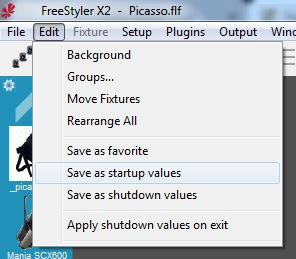
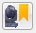

Fixture startup, favorite and shutdown values
FreeStyler has the possibility of 3 sets of fixture values.
The values are all 2×512 dmx channels values saved in “Startup”, “Favorite” and “Shutdown”.
It is important to remember that it is all channels which is stored and restored.
This means that all fixtures are to be set in the wanted position, intensity, shutter, color and so on …. before saving.

{kind=link}
“Startup”
In case of “Startup” values the purpose is to set all the values which normally will be manually adjusted and just set once.
One obvious thing to adjust here is focus, in case of moving heads, as this is individual on each gig. You save this setting and when you shut down or reboot on a gig then you don’t need to readjust this on startup as there are a lot of other things to be concerned about.
Startup values
“Favorite”
This is a setting of fixture values that are to be used again and again or just as a default setting which can be set to get back to a known state.

Favorite toggle
Note this will restore all channels value and therefore avoided used during a show.
{kind=link}
“Shutdown”
The “Shutdown” is the last values send to the fixtures when FreeStyler is shutting down. This gives the possibility of setting the fixtures into a known state when shutting down. Worth to note is that some fixtures get their one life when the DMX signal disappears.
Example missing please add if you have any.
To use the “Shutdown” value the “Apply shutdown values on Exit” must be checked “on”